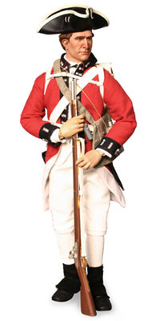

Ille Dhuinn - (An Gille Don)
The Brown-Haired Lad - Shorter Version -
Clansmen in British Uniform

Tune
Milling Song
Sequenced by Christian Souchon
after a record by
Alec McKinnon
|
"It was the inhuman practice of the non-Jacobite governments to impress into the army any of the Highlanders who proved faithful to Royalism.
Thus, we find the unfortunate MacIan of Glencoe , when he went to Edinburgh to make his submission, promising 'to bring all his people within a short time to do the like; and if any of them refused, they should be imprisoned or sent to Flanders.'
The following is the piteous lament of a Gael in such circumstances."
|
"Une pratique inhumaine des gouvernements anti-Jacobites consistait à faire entrer par la menace dans l'armée anglaise les Highlanders qui s'étaient montrés fidèles à la couronne.
C'est ainsi que le malheureux MacIan de Glencoe , lorsqu'il se rendit à Edimbourg pour préter serment d'allégeance, fut conduit à promettre 'd'amener sous peu tous les siens à en faire de même; si l'un d'entre eux s'y refusait, tous seraient emprisonnés ou envoyés combattre en Flandres.'
Le chant qui suit est la complainte lamentable d'un Gaël placé dans une telle situation."
|

|
O ho ro brown haired lad
Handsome brown haired lad O ho ro brown haired lad 1. And if I saw you coming I would run with haste to see you. 2. I would go, to meet you Bare-footed without shoes 3. I would dance to the music of the fiddle In the reel of Clan Donald. 4. I would dance to the music of the fiddle In the reel of Clan Donald. 5. I would dance on my feet 'Till there were holes in my shoes. 6. It was on Saturday evening We were in a fearful battle. 7. Many a man who had fallen Could not speak of his anguish. 8. Many a sister had lost a brother And mother a son. 9. We were ordered to march To the level high street. 10. To the easy walk of the high street Where our boots would not wear out. 11. The men of the red coats Would go off well trained. 12. We were given pipes and a drum To keep us in order. 13. And going on a voyage in the morning Returning home if I live. O ho ro brown haired lad Handsome brown haired lad O ho ro brown haired lad
|
O ho ro 'ille dhuinn
Ille dhuinn bhòidhich O ho ro 'ille dhuinn 1. Ach na faicinn thu tighinn 'S mi gu ruitheadh 'nad choimhail. 2. 'S mi gun rachadh nad' choinneanh Air mo bhonnan gun bhrògan. 3. 'S mi gun dannsadh ceòl fìdhle 'Dol do rìdhle Clann Dòmhnaill 4. 'S mi gun dannsadh ceòl fìdhle 'Dol do rìdhle Clann Dòmhnaill. 5. 'S mi gun dannsadh air mo bhonnaibh Gus an tollain mo bhrògan. 6. 'S ann air feasgar Disathuirn Chuir sinn 'm bàtul bha brònach. 7. 'S iomadh fear a bha na shìneadh Nach innseadh a dhòrain. 8. 'S iomadh piuthar bha gun bhràthair Agus màthair gun òigear. 9. 'S fhuair sinn òrdugh a bhi màrteadh Gu sràid ard nan ceum còmhnard. 10. Gu sràid ard nan ceum sòcair Far nach cosgadh ar brògan 11. Luchd nan còtaichean ruadha Rachadh suas an deadh òrdugh. 12. Fhuair sinn pìob is druma Gus ar cumail an òrdugh 13. 'S 'dol air "voyage" 's a mhaduinn Tilleadh dhachaidh mas beò mi. O ho ro 'ille dhuinn Ille dhuinn bhòidhich O ho ro 'ille dhuinn. |
La la, le beau brun,
O le beau gars brun! La la le beau brun 1. Si sur le chemin tu te montres A ta rencontre je courrai. 2. Je bondirai à ta rencontre Les pieds-nus et sans mes souliers; 3. Et dansant au son de la vielle La gigue du Clan McDonald. 4. Et dansant au son de la vielle La gigue du Clan McDonald. 5. Et dansant, et dansant sans cesse, Jusqu'à m'en trouer les souliers. 6. Un samedi, dans la soirée, Nous livrions âpre bataille, 7. Et plus d'un homme était tombé La peur lui rongeant les entrailles . 8. Et la soeur ce soir-là perdit Son frère, la mère son fils. 9. On nous donna l'ordre de marche Sur la grand route nivelée. 10. On marche bien sur la grand route! On n'y use point ses souliers! 11. Voyez les gars aux habits rouges! Comme ils partent bien entraînés! 12. La cornemuse et le tambour Nous maintiendront en rangs serrés. 13. Nous partons à l'aube en voyage Puisse la mort nous épargner! La la, le beau brun, O le beau gars brun! La la le beau brun Traduction: Ch. Souchon (c) 2006 |
Listen to Alec McKinnon
|
"This is a very old
milling song
originally composed in Scotland. The first five verses of the song belong to another well-known Cape Breton milling song, Cha Bhith Mi Buan ‘s Tu Bhith Bhuam (which Leach collected from Malcolm Angus MacLeod), although the tune and chorus are clearly that of An Gille Donn. It was common for themes and verses from various songs to be combined in one performance, but it is also quite possible that the singer recognized the fact that he was performing another song and corrected himself halfway through. This would seem to be evidenced by the pause and change of theme after the performance of the fifth verse.
. The song is sung from the perspective of a young man who has gone to battle on the mainland of Europe during the Napoleonic wars. Several Gaelic song collections attribute the composition to a soldier from the island of Mull. Scholars have also cited a verse which makes mention of troops being sent to Holland under the orders of King George (cf next song ), and suggest that these are references to a 1799 expedition to the Netherlands in which the Gordon Highlanders (raised by the 4th Duke of Gordon and his celebrated duchess Jean Maxwell) took part. . There is a similar but much shorter version of this song collected from Margaret Gillis . Source: McEdward Leach and the Songs of Atlantic Canada" |
"Voici un très ancien
chant de foulage
composé à l'origine en Ecosse. Les 5 premières strophes appartiennet à un autre chant de foulage de Cap Breton, "Cha Bhith Mi Buan ‘s Tu Bhith Bhuam" , ... bien que la mélodie et le refrain soient sans aucun doute celui de "An Gille Donn". il était d'usage de mélanger les thèmes et les strophes de plusieurs chants en cours d'exécution. Mais il est possible aussi que le chanteur se soit rendu compte qu'il se trompait de morceau et qu'il ait "rectifié le tir" en cours de route. Il fait d'ailleurs une pause après la cinquième strophe où il change de thème.
Le chant est celui d'un jeune homme envoyé combattre sur le continent au cours des guerres napoléoniennes. Plusieurs recueils de chants gaéliques attribuent sa composition à un soldat originaire de l'Ile de Mull. Les érudits citent un couplet qui mentionne l'envoi de troupes en Hollande au service du Roi Georges (cf chant suivant ) et y voient une référence à une expédition de 1799 aux Pays Bas à laquelle prirent part les Highlanders du Clan Gordon (formation créée par le 4ème Duc de Gordon et son épouse la célèbre Jeanne Maxwell)." Il existe une version similaire mais bien plus courte de ce chant enregistrée par Margaret Gillis . Source: McEdward Leach and the Songs of Atlantic Canada" |